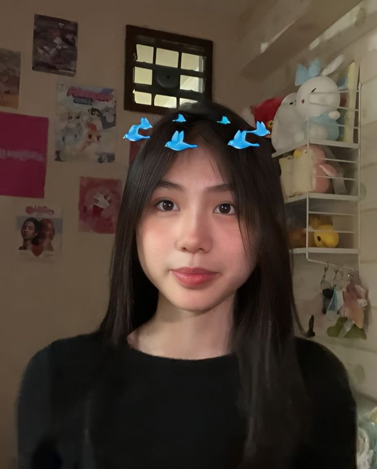

🎵 Musik Favorit Saya 🎵
Berikut adalah lagu top 7 favorit saya:
Love For You - OVG
TOMOKOI - Nozomi Kitay
The Perfect Pair - Beabadoobee
Real Man - Beabadoobee

A Night To Remember - Beabadoobee
beanie - chezile
no other heart - mac de marco